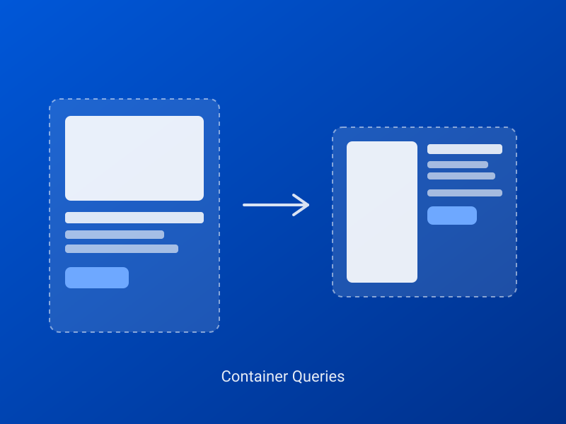
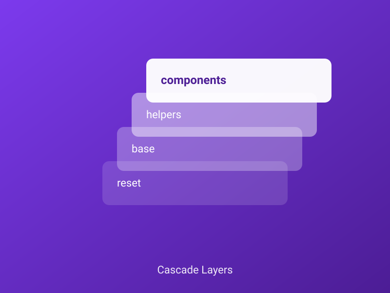
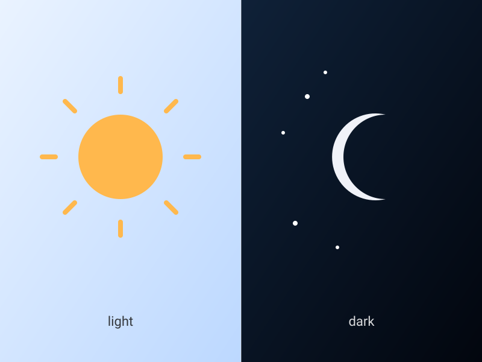

Karten-Titel
Kurzer Beschreibungstext für diese Karte.
Reine CSS Custom Properties, kein LESS, kein Compile-Schritt. Fließende Skalen
(clamp()) als Standard, Container Queries statt Viewport-Breakpoints,
@layer statt Spezifitäts-Kämpfe. Diese Seite zeigt alle Bausteine live.
Ein normaler Absatz mit einem Link, fettem und
kursivem Text, markiertem Text und einer
CSS-Abkürzung. Auch Inline-Code
ist enthalten.
Ein Blockzitat mit etwas längerem Text, um zu zeigen, wie der Zeilenumbruch und der linke Rand wirken.
function hello() {
return "ncss";
}| Spalte A | Spalte B |
|---|---|
| Wert 1 | Wert 2 |
| Wert 3 | Wert 4 |
Kleiner, gedämpfter Hinweistext (.ncss-text-sm .ncss-text-muted).
Dieser Absatz beginnt mit einem Drop Cap (.ncss-drop-cap, natives
initial-letter). Überschriften oben nutzen bereits text-box-trim
- der unsichtbare Leerraum über/unter dem Text (Font-Metrik-Reserve) ist weg, Abstände
stimmen jetzt exakt mit den Design-Tokens überein statt "ungefähr".
Silbentrennung (.ncss-hyphenate) in einer schmalen, blockformatierten
Spalte: Donaudampfschifffahrtsgesellschaftskapitän, Rechtsschutzversicherungsgesellschaften.
Tabellarische Ziffern (.ncss-nums-tabular): 1111 vs.
8888 - gleiche Breite, kein "Wackeln" nebeneinander.
Diese Box ist mit .ncss-float-start und .ncss-float-shape-circle
gefloatet - der Text hier fließt um die tatsächliche Kreisform herum, nicht nur um das
rechteckige Kästchen. Container schmaler als 28rem ziehen (Ecke unten rechts) - dann fällt
der Float weg und die Box wird ein normaler Block, damit der Text nicht in eine unlesbar
schmale Spalte gequetscht wird. Genug Text zum Umfließen, damit der Effekt sichtbar wird -
mehrere Sätze braucht es, damit die Zeilen tatsächlich neben der Form beginnen und enden.
Text-Brand · Text-Success · Text-Warning · Text-Danger
Fenster/Container schmaler ziehen - die Karten fließen automatisch um, ganz ohne Media Query.
Diese Box per Ecke unten rechts in der Breite ziehen - die Karte darin reagiert auf IHREN Container, nicht den Viewport.
.ncss-search startet schmal, wächst beim Fokussieren per reiner
width-Transition auf volle Breite - kein JS. Bleibt zusätzlich breit,
solange bereits Text eingegeben ist.
.ncss-divider--vertical (auf einem <hr>) für Trenner
innerhalb einer Flex-Zeile, horizontal ist bereits der native <hr>-Default:
.ncss-transform-center zentriert ein Element auf sich selbst
(position:absolute + translate:-50% -50%) - der
Elterncontainer braucht dafür eine eigene position (hier
position:relative per Inline-Style auf dem Platzhalter).
<div style="position: relative;">
<span class="ncss-badge ncss-transform-center">Zentriert</span>
</div>Inhalt, der per nativem <details> ein-/ausgeblendet wird - kein JS nötig. Die "Box"-Optik kommt jetzt explizit von .ncss-disclosure, nicht mehr vom nackten Tag.
Kurzer Beschreibungstext für diese Karte.
Rahmen/Ecken/Schatten sind eigene Utilities (helpers/elevation.css), keine Card-Modifier - hier nur .ncss-radius-lg .ncss-shadow-lg, bewusst ohne .ncss-border.
Nur .ncss-border .ncss-radius-lg, ganz ohne Schatten.
.ncss-card ganz allein: kein Rahmen, keine Ecken, kein Schatten - reine Struktur.
.ncss-card--flush: gar kein Padding mehr in Body/Header/Footer (auch nicht oben/unten), Inhalt reicht bis an jeden Kartenrand.
Media-Position: links/rechts brauchen eine Klasse (Flex-Richtung dreht sich um), oben ist die natürliche Reihenfolge, unten braucht nur .ncss-card-media als LETZTES Kind im Markup. Links/rechts brauchen mindestens 24rem CONTAINER-Breite, um nebeneinander zu stehen - Box unten ziehen, um den Umbruch zu sehen:
.ncss-card--horizontal
.ncss-card--horizontal-end
Einfach .ncss-card-media als letztes Kind statt erstes
Footer bleibt immer unten ausgerichtet, unabhängig von der Textlänge der Nachbarkarte (.ncss-card-body{flex:1 1 auto} füllt den Rest, der Footer folgt direkt danach):
Kurz.
Deutlich längerer Text, der mehrere Zeilen einnimmt und diese Karte höher macht als die Nachbarkarte.
Bild links vs. rechts braucht keinen Modifier - reine Dokumentreihenfolge (.ncss-split-media als erstes oder letztes Kind), genau wie bei Card oben. Ab 36rem CONTAINER-Breite stehen beide Spalten nebeneinander, darunter stapeln sie sich automatisch:
.ncss-split-media als erstes Kind. Vertikale Ausrichtung standardmäßig zentriert (--ncss-split-align).
.ncss-split-media als letztes Kind + .ncss-split--align-start statt der zentrierten Standardausrichtung.
<div class="ncss-split-container">
<div class="ncss-split">
<div class="ncss-split-media"><img src="foto.jpg" alt="..."></div>
<div class="ncss-split-content">
<h3>Titel</h3>
<p>Text ...</p>
</div>
</div>
</div>Bekannt aus UIkit (uk-tile-*) - volle-Breite Blöcke zum Gliedern einer langen Seite. --brand/--brand-2 kippen automatisch auf hellen Text, Karten/Code-Blöcke DARIN bleiben normal dunkel-auf-weiß:
--brand)Heller Text automatisch, keine eigene Klasse nötig.
--brand-2)Dieselbe automatische Textumschaltung, andere Markenfarbe.
--muted)--ncss-color-bg-subtle als Hintergrund, normaler Text.
<section class="ncss-tile ncss-tile--brand">
<h2>Titel</h2>
<p>Text ...</p>
</section>Ohne weiteres Zutun bleibt eine Tile innerhalb ihres Containers - für volle Bildschirmbreite bis zum Bildschirmrand zusätzlich .ncss-full-bleed kombinieren, siehe Handbuch (Landingpage-Bausteine) für ein Beispiel.
Bekannt von apple.com - Text-Akkordeon links, dazugehöriges Bild rechts wechselt automatisch. Komplett nativ (<details name> + :has()), kein JS. Fenster/Panel schmaler als 36rem ziehen, um das Bild inline im geöffneten Punkt zu sehen:
Komponenten reagieren auf ihren eigenen Platz, nicht auf den Viewport.

Reihenfolge statt Spezifitäts-Kämpfe - kein !important nötig.

Ein Wert pro Token deckt Hell und Dunkel ab - kein zweites Stylesheet.

Ausführliches Beispiel inkl. reproduzierbarem Code im Handbuch (Landingpage-Bausteine).
Bild oder Text bricht aus der Textspalte aus, bleibt aber NEBEN dem Fließtext statt am Bildschirmrand zu landen (das leistet bereits .ncss-bleed-start/-end) - Sidenote-Muster, komplett nativ per CSS Grid. Panel schmaler als 60rem ziehen, um den Fallback (Randnotiz stapelt normal im Text) zu sehen:
CSS Grids Auto-Placement platziert Elemente in Dokumentreihenfolge und nutzt dieselbe Zeile weiter, solange die eigene Spalte darin noch frei ist. Eine Randnotiz, die im Markup direkt NACH diesem Absatz steht, landet dadurch automatisch auf gleicher Höhe daneben.
Zweiter Absatz, mit einer Notiz links daneben.
Dritter Absatz, ganz ohne Randnotiz - der Platz daneben bleibt einfach leer.
Ausführliches Beispiel inkl. reproduzierbarem Code im Handbuch (Landingpage-Bausteine).
minmax(MIN, MAX) steckt schon länger hinter .ncss-grid - MIN
verhindert zu schmale Spalten, MAX begrenzt zusätzlich das Wachstum nach oben (Default
1fr, unbegrenzt). Nur 2 Karten in einem breiten Grid, einmal ungedeckelt
und einmal mit --ncss-grid-max:
Ohne --ncss-grid-max
--ncss-grid-max: 10rem
.ncss-grid--cols-3 statt der intrinsischen .ncss-grid - immer
exakt 3 Spalten (ab 36rem Containerbreite, darunter 1 Spalte). Eine Karte mit
.ncss-col-span-2 nimmt 2 der 3 Spalten ein, die nächste füllt den Rest:
.ncss-col-span-2)
.ncss-bento: gemischte Kachelgrößen, grid-auto-flow: dense
füllt Lücken automatisch mit nachfolgenden kleineren Kacheln auf:
| Name | Rolle | Team | Standort | Start | Status |
|---|---|---|---|---|---|
| Beispiel A | Entwicklung | Web | Berlin | 2024 | Aktiv |
| Beispiel B | Design | Web | Köln | 2023 | Aktiv |
Karten-Stapel-Variante (Container schmaler ziehen):
| Name | Rolle | Team |
|---|---|---|
| Beispiel A | Entwicklung | Web |
| Beispiel B | Design | Web |
Langer Inhalt Zeile 1
Zeile 2
Zeile 3
Zeile 4
Zeile 5
Zeile 6
Zeile 7
Zeile 8
Der Balken oben (.ncss-scroll-progress) und der schmale Streifen am
rechten Bildschirmrand zeigen beide denselben Lesefortschritt. Farbe/Verlauf brauchen
KEINE eigene Klasse - einfach .ncss-gradient-brand/-subtle
oder .ncss-surface--brand-2/-neutral dazu kombinieren (wie
beim oberen Balken). Vertikal statt horizontal: .ncss-scroll-progress--vertical
(+ optional --end für die rechte statt linke Kante, wie beim seitlichen
Streifen hier).
.ncss-animate-on-scroll, kein JS).
Dieser Text ist NUR beim Drucken sichtbar.
Dieser Text ist nur am Bildschirm sichtbar (beim Drucken ausgeblendet).
Kurz.
Deutlich längerer Text, der mehrere Zeilen einnimmt und diese Karte höher macht.
Mittellang.
Kurzer Inhalt.
Etwas längerer Inhalt mit mehr Text als die Nachbarkarten, um den Masonry-Effekt zu zeigen.
Kurz.
Noch mehr Text hier, damit die Spalten unterschiedlich hoch werden und der Effekt sichtbar wird.
Mittel.
Laufen unter prefers-reduced-motion: reduce automatisch nur einen einzigen, praktisch unsichtbaren Frame (globale Regel in reset.css) - kein Extra-Code pro Animation nötig.
Transition-basiert, kein animation - reagieren auf Zustand statt einmalig abzulaufen. Maus drüber bewegen bzw. klicken/halten:
.ncss-gpu-boost (transform: translateZ(0)) lässt sich gefahrlos mit hover-lift/-grow kombinieren, weil diese die eigenständigen translate/scale-Eigenschaften nutzen, nicht transform - nur gezielt bei sichtbarem Ruckeln einsetzen, nicht vorsorglich überall (jede zusätzliche Compositor-Ebene kostet Grafikspeicher).
Dasselbe .ncss-offcanvas, das die Navigation oben unterhalb 64rem
Viewport-Breite nutzt - hier unabhängig davon, immer über den Button auslösbar.
Keine eigene Lightbox-Komponente mehr - nur .ncss-modal mit zwei Varianten.
Drei Varianten, damit klar wird, was .ncss-full-bleed genau tut - der Trick
bricht immer auf 100vw aus, egal wie breit oder schmal der umgebende Container gerade ist.
1. Hintergrund randlos, Inhalt bleibt normal breit (der häufigste Fall)
Diese <section> bleibt strukturell in <main class="ncss-container">
verschachtelt, bricht optisch aber randlos aus (.ncss-full-bleed) - der
innere .ncss-container hält den Text wieder in normaler Spaltenbreite,
nur der Hintergrund geht bis zum Bildschirmrand.
2. Ohne inneren .ncss-container: der Inhalt bricht mit aus
Fehlt der innere .ncss-container, läuft auch der TEXT bis an den
Bildschirmrand - meist nur für ein einzelnes randloses Bild, Video oder ein reines
Farbband sinnvoll, nicht für Fließtext.
3. Bricht auch aus einem schmalen Eltern-Container heraus
Dieser Block steckt in einem schmalen .ncss-container--narrow - der
Full-Bleed-Trick bricht trotzdem bis zum echten Bildschirmrand aus, unabhängig
davon, wie eng sein direkter Elternrahmen gerade ist.
4. Einseitig ("Lesezeichen"): .ncss-bleed-end bricht nur nach rechts aus
Links bleibt dieses Zitat normal in der Textspalte, rechts bricht es bis zum Bildschirmrand aus - wie ein Lesezeichen, das aus dem Inhalt herausragt. Die spiegelverkehrte Variante
.ncss-bleed-startbricht stattdessen nach links aus.
5. Ab der Mitte nach rechts: .ncss-bleed-half-end - die START-Kante (links) sitzt exakt auf der Mitte des Elternelements, die END-Kante (rechts) bricht bis zum Bildschirmrand aus
Beginnt in der Mitte, bricht nach rechts bis zum Bildschirmrand aus.
6. Ab der Mitte nach links: .ncss-bleed-half-start - spiegelverkehrt zu Nr. 5
Bricht nach links bis zum Bildschirmrand aus, endet in der Mitte.
7. Symmetrisch aus der Mitte: .ncss-bleed-center wächst auf beiden Seiten gleich weit um einen festen Betrag, bleibt aber auf der Mitte des Elternelements zentriert (anderer Mechanismus, kein Bezug zum Viewport - funktioniert daher auch in einem nicht zentrierten Container)
Wächst um 1.5rem auf jeder Seite über die Karte hinaus, bleibt aber zentriert.